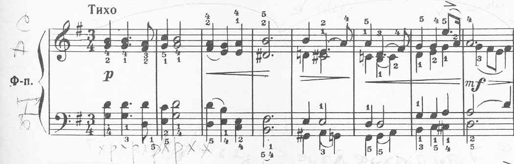

Orquestación
Clase 013
Ejercicio de Orquestación para 4 Corni in F (Tchaikovksy Album de la niñez N º 1)
Tchaikovksy "Album de la niñez", N º 1 "Oración de la Mañana"

013
[Bronces]
 Ejercicio de Orquestación para 4 Corni in F (Tchaikovksy Album de la niñez N º 1)
Ejercicio de Orquestación para 4 Corni in F (Tchaikovksy Album de la niñez N º 1)